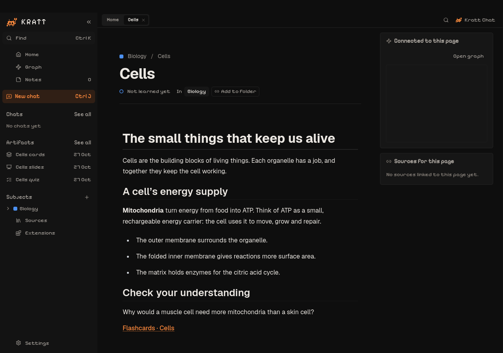
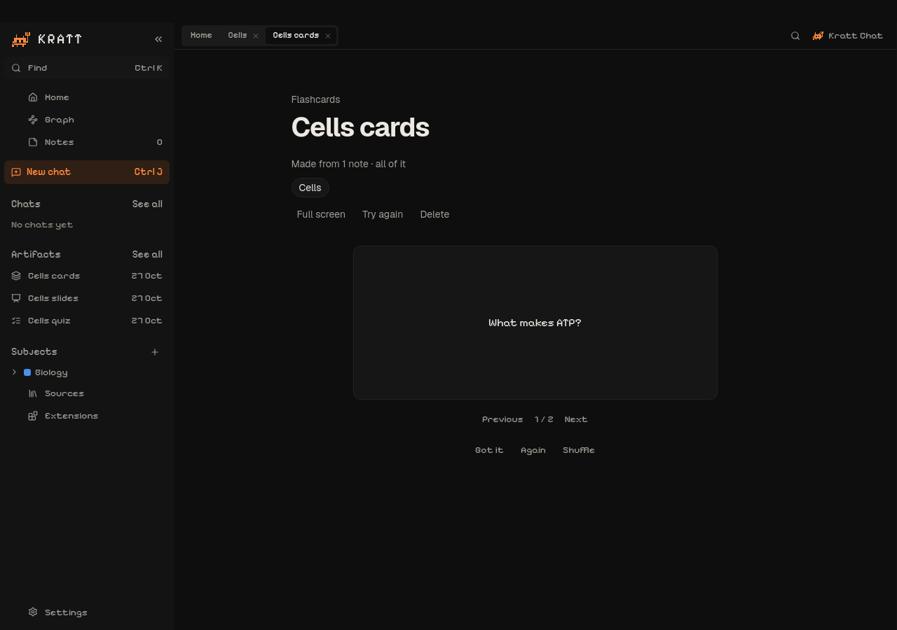

Think in connections
Organise pages into subjects. Link one idea to another with wiki links. Keep the source material close to your own words.

KrattGather your notes. Connect the ideas. Ask Kratt to turn them into something you can practise — with AI running on your own computer.
For Linux, macOS and Windows. Early preview.

Organise pages into subjects. Link one idea to another with wiki links. Keep the source material close to your own words.
Turn your selected notes into flashcards, slides or quizzes. Larger selections are processed in parts, without cutting notes to fit a single prompt.
Review one card or question at a time. Open full screen, use the keyboard, and return to the notes that the material came from.
Choose the notes that matter. Kratt makes study material you can revisit, rename and keep beside your work.
AI can make mistakes. Check generated material against your notes.

Kratt creates a Study folder when you first open it. Notes, sources, chats and study materials live there as Markdown files, ready to open in another editor or back up yourself.
The bundled engine reads those files and rebuilds a local search index. Selected notes supply the context for AI questions. Ollama runs the model on your computer.
How privacy worksNo account. No cloud memory database.
This is the product website. The app runs on your computer; downloads are hosted on GitHub Releases.
Checking for published builds…
x86_64 · Ubuntu 22.04 or newer-compatible systems
Open the .deb in your software installer. Or download the AppImage, allow it to run as a program in the file’s Properties, then double-click it. AppImage support varies by distribution; the .deb is the simplest option on Ubuntu.
Apple silicon and Intel · macOS 11+
Open the DMG and drag Kratt into Applications. Current testing builds are unsigned and not notarized; Gatekeeper may block them. A verified public release is still planned.
x64 · Windows 10 or 11
Open the installer and follow its prompts. The engine and WebView2 installer are included. Current testing builds are unsigned and may show publisher or SmartScreen warnings.
The engine starts and creates your Study folder automatically. No Python installation or engine commands.
Create a subject and a note. Write, link pages, or add source material to build your workspace.
For AI, install Ollama from the prompt, then choose or download a model in Kratt. You can keep taking notes without it.
Something else on your mind?
Ask or report a problem.
The desktop engine sends AI prompts only to local Ollama. Kratt has no cloud backend or telemetry. Downloading models, opening websites, and installing extensions can use the internet. An extension may have its own network permissions; review them before installing it.
No. Writing and organising notes works without AI. Chat and generated study materials need a running Ollama installation and a downloaded model. Model performance depends on your computer.
Yes. They are ordinary Markdown files with metadata. Open your Study folder in another editor, copy it to a backup drive, or change its location in Settings → Data.
Kratt sends every selected note, splitting larger selections into parts. That prevents input from being cut to fit one prompt. It does not guarantee that the AI includes every detail in its answers, so review the results.
It is an early desktop preview. Current builds are for testing; macOS signing, notarization and Windows signing are not configured yet. Published release notes describe the checks completed for each build.
This page has no analytics or advertising scripts. GitHub hosts it and serves release metadata and downloads. Those requests are subject to GitHub’s privacy policy. Your Study files are never sent to this website.